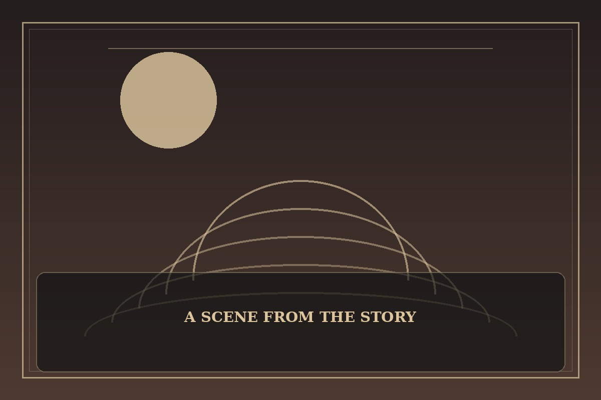

Gosu
Synopsis
A seemingly ordinary traveler carries extraordinary training and a complicated past. His journey through rival schools and strange encounters mixes humor with questions about mercy and responsibility.
Chapter 1: Dumplings Before Destiny
The traveler stopped at a roadside stall because the dumplings smelled better than any heroic destiny he had heard about. He had barely taken a bite when two rival fighters burst into the shop, demanding that the owner reveal which school had hired him.
They challenged one another, overturned a table, and demanded that the traveler choose a side. He calmly moved the steaming basket out of danger and asked whether either of them planned to pay for the broken bowls. Their silence was the first sensible moment of the afternoon.
When the fighters lunged, he redirected them into a pile of empty sacks without spilling the tea. The shopkeeper laughed, the rivals blushed, and the traveler finished his meal. His journey continued before sunset, proving that not every conflict needed a grand speech or a broken bone.

This fan-made sample is an original piece created for a student website project; it is not an official chapter of Gosu.